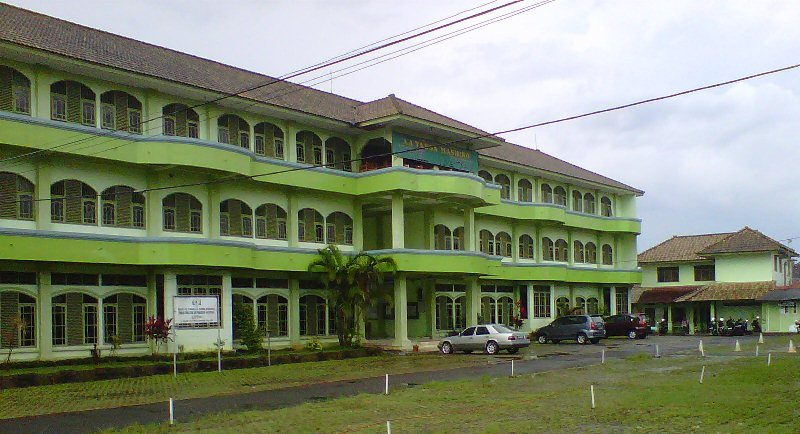
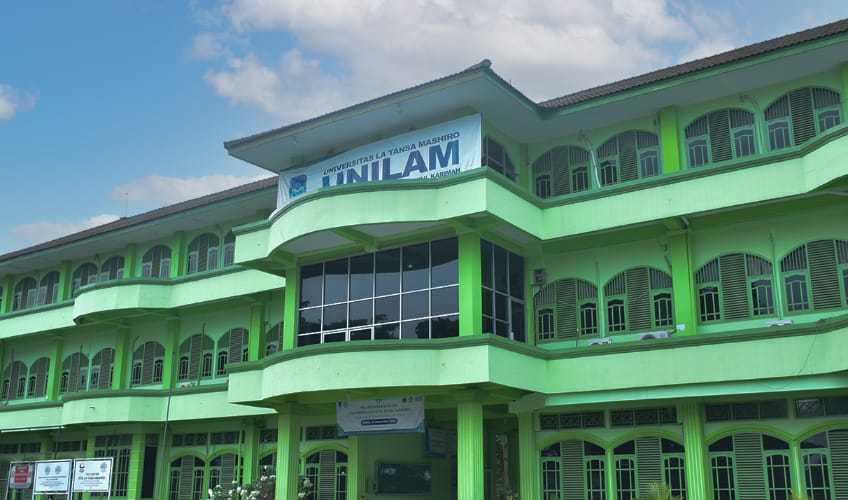

Sejarah Berdirinya
"La Tansa Mashiro" — jangan lupa tempat kembali.
1965
Kyai Rifai lulus Gontor
1968
Pondok Daar El-Qolam
1991
Pondok La Tansa
1993
UNILAM berdiri
1997
Wafatnya Kyai Rifai
2006
Akademi Kebidanan
2018
STKIP berdiri
2023
Resmi jadi Universitas
1965 – 1991
Sejarah Universitas La Tansa Mashiro tidak bisa lepas dari sosok ulama Banten, alumnus Pondok Modern Gontor lulusan tahun 1965, KH. Drs. Ahmad Rifai Arif (Kyai Rifai). Beliau bersama keluarga besarnya mendirikan Pondok Pesantren Daar El-Qolam di Tangerang pada tahun 1968. Selang dua dekade, tepatnya tahun 1991, semangatnya membangun umat mendorong Kyai Rifai untuk mendirikan pondok pesantren kedua bernama Pondok Pesantren La Tansa di daerah pegunungan Parakansantri, Kabupaten Lebak, Banten — berbatasan dengan Kabupaten Bogor, Jawa Barat.
Latar belakang berdirinya Pondok Pesantren La Tansa tidak persis sama dengan pondok pertamanya. Cita-citanya terlihat lebih kompleks dan holistik, dipersiapkan untuk menjawab dinamika kehidupan masyarakat muslim di dunia — proyeksinya tidak berhenti pada pendidikan dasar dan menengah, namun linear dengan pendidikan tinggi setingkat universitas. Itulah mengapa gedung besar yang dibangun pada fase awal di Pondok Pesantren La Tansa sudah diberi nama “Unilam”, akronim dari “Universitas La Tansa Mashiro”, sebagai bentuk keyakinan akan lahirnya sebuah universitas.

“La Tansa Mashiro” berasal dari bahasa Arab yang berarti “Jangan Lupa Tempat Kembali”.
Mengandung makna filosofis bagi berdirinya UNILAM: setiap manusia sebagai makhluk dan hamba Allah Swt. pasti akan kembali kepada-Nya untuk diminta pertanggungjawaban atas amal selama hidup di dunia — maka sebaik-baik bekal kembali adalah takwa, baik dalam kesalehan spiritual maupun dalam manifestasinya pada aktivitas dan kepemimpinan di tengah masyarakat. Inilah fondasi Tri Dharma UNILAM yang ditanamkan pendirinya tiga dekade lalu.

1993
Dua tahun pasca beroperasinya Pondok Pesantren La Tansa, tepatnya tahun 1993, Kyai Rifai memulai debutnya di dunia perguruan tinggi. Berkat dukungan sahabat-sahabat akademikinya, beliau memproklamirkan UNILAM sebagai nama perguruan tinggi yang baru saja didirikannya. Di gedung itulah para mahasiswa, yang sebagian besar berasal dari guru pengabdian Pondok Pesantren La Tansa, memulai perkuliahan — diajar oleh sahabat-sahabat Kyai Rifai, para akademisi dari almamaternya, IAIN Serang, dan kampus lain di Jakarta, yang menempuh jalan panjang dan berkelok sejauh kurang lebih 70 km dari Serang ke Parakansantri setiap kali mengajar.
Sebagai bentuk apresiasi, perlu disebutkan nama-nama sahabat Kyai Rifai yang hadir dalam pertemuan pertama membahas rencana pendirian UNILAM: Drs. MA. Tihami, MA, Drs. Najmuddin, Drs. H.E. Syibli Syarjaya, dan Drs. M. Hudori. Pertemuan itu melahirkan tim yang disebut Panitia Sembilan, diketuai Drs. MA. Tihami, yang bergerak mengurus proses perizinan universitas. Forum sempat menyepakati enam fakultas, yang kemudian mengerucut menjadi tiga: Fakultas Ekonomi, Fakultas Agama Islam, dan Fakultas Teknologi Pertanian. Pada penerimaan mahasiswa baru tahun akademik 1993–1994, hanya Fakultas Ekonomi dan Fakultas Agama Islam yang siap beroperasi, dengan rektor pertama Prof. Dr. H. Abdurrahman Partosentono.
Kedua fakultas ini kemudian berkembang menjadi Sekolah Tinggi Ilmu Ekonomi (STIE) jurusan Manajemen dan Sekolah Tinggi Ilmu Ushuluddin (STIU) jurusan Communication dan Penyiaran Islam, yang belakangan menjadi Sekolah Tinggi Agama Islam (STAI). Pada tahun 1996, kampus berpindah dari Pondok Pesantren La Tansa di Parakansantri ke Rangkasbitung, ibu kota Kabupaten Lebak.
Akhir 1990-an – 2018
Tidak lama setelah kepindahan kampus, Kyai Rifai berpulang di Gintung, Tangerang, pada tahun 1997. Sempat lesu dan dirundung pesimisme, perjuangan membesarkan UNILAM — yang saat itu dikenal sebagai Perguruan Tinggi La Tansa Mashiro Rangkasbitung — kembali bergeliat di bawah komando Soleh Rosyad, suami dari putri tertua Kyai Rifai, yang menyerap baik pesan-pesan perjuangan dan harapan besar sang pendiri.
Komplek kampus di Rangkasbitung kala itu belum tampak seperti kampus pada umumnya. Berdiri di tengah semak belukar, sawah, dan rawa di bilangan Pasir Jati, masyarakat sekitar menjulukinya “kapal pecah” — gedung satu lantai berlumut dengan tiang besi behel dan material papan berserakan, jalan yang jauh dari mulus, dan jumlah mahasiswa tak lebih dari 80 orang. Namun berkat kesabaran dan konsistensi para pewaris nilai perjuangan Kyai Rifai, kampus ini melewati masa-masa kritisnya.
Di lima tahun pertama abad ke-21, UNILAM menambah program studi untuk melengkapi STIE dan STAI: Akademi Kebidanan (Akbid) La Tansa Mashiro berdiri pada 2006, membawa nilai tambah kemandirian dan keislaman ala pesantren bagi mahasiswinya. Setelah menanti dua belas tahun, STIE, STAI, dan Akbid berhasil melahirkan Sekolah Tinggi Keguruan dan Ilmu Pendidikan (STKIP) pada 2018.

Januari 2023
Dengan empat lembaga pendidikan tinggi di Yayasan La Tansa Mashiro yang kala itu diketuai Hj. Ernawati Sulhatul Imama, M.Pd.I, keinginan menggabungkan keempatnya menjadi satu universitas makin kuat. Tim akselerasi dibentuk untuk memproses perizinan ke Kemenristekdikti, dan dengan kerja keras tim serta dukungan yayasan, status universitas berhasil diraih pada Januari 2023. Rapat Yayasan La Tansa Mashiro menetapkan nama Unilam tetap dipakai sebagai warisan nilai perjuangan sang pendiri, dengan Dr. KH. Soleh, MM sebagai rektor pertama.
Berdasarkan SK Menteri Pendidikan, Kebudayaan, Riset, dan Teknologi Nom 97/E/O/2023 tentang izin penggabungan Akademi Kebidanan La Tansa Mashiro, Sekolah Tinggi Keguruan dan Ilmu Pendidikan La Tansa Mashiro, dan Sekolah Tinggi Ilmu Ekonomi La Tansa Mashiro, Perguruan Tinggi La Tansa Mashiro telah resmi menjadi Universitas La Tansa Mashiro.